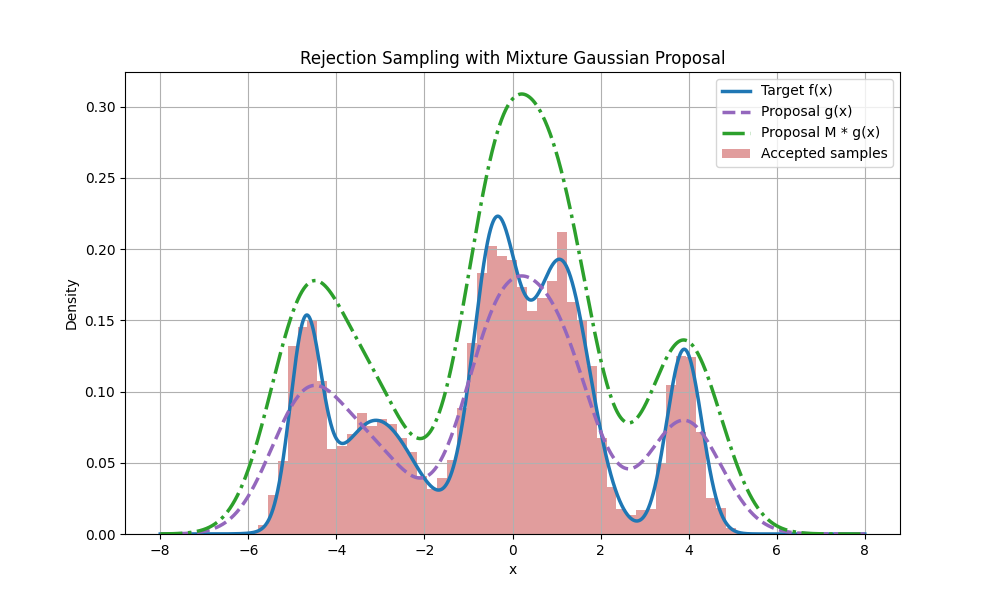
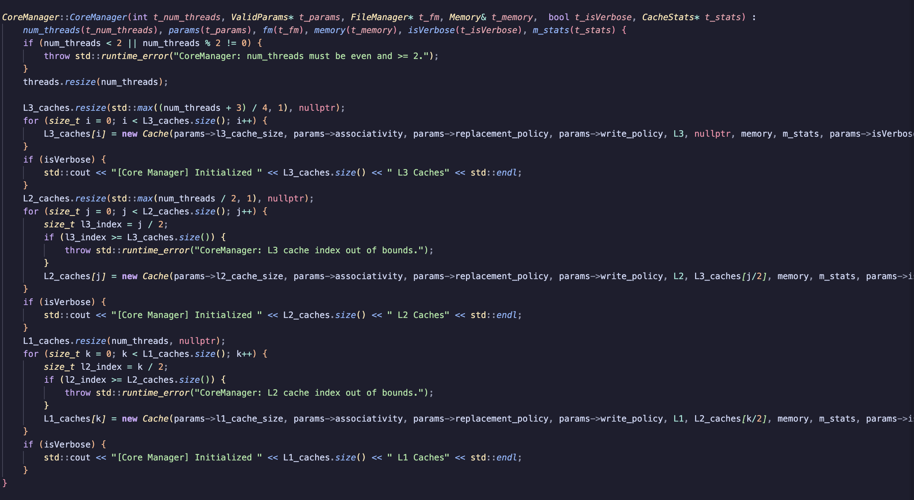
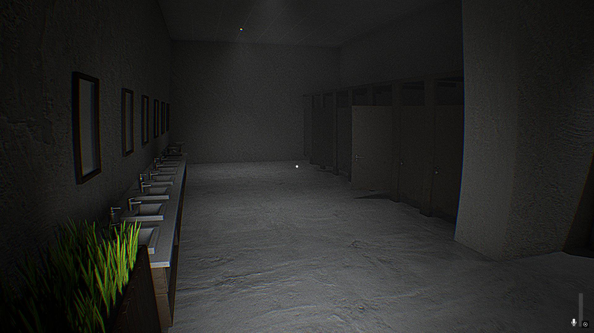

Projects
Featured projects across systems programming, machine learning and game development, including coursework and independent work. For a complete list of my games, see my itch.io page.
Rejection Sampling Optimization
Developed and evaluated methods to improve rejection sampling efficiency using Gaussian mixture proposals, whitening-based reparameterization, and parallelized sampling.

Custom OS Kernel
Designed and implemented a custom OS kernel in C on Barrelfish OS as part of a small team, adding support for capabilities, virtual memory, multicore processing, and message passing. Implemented memory management using dual-key and augmented AVL trees, bitmaps, and linked lists for fast O(log n) allocation with low fragmentation.
Parallel CPU D-Cache Simulator
A performance-focused CLI simulator modeling multi-level D-Cache behavior in CPUs, with configurable cache sizes, associativity, replacement and write policies. Supports multi-threaded execution under the MESI protocol to evaluate cache efficiency under parallel workloads.

Hush (UE5 Game)
An early remake of Silent Stalker of Level 0 with improved graphics, gameplay, and story. Optimized performance using Level Streaming, increasing frame rate stability by 20-30%. Designed Niagara particle systems and volumetric effects, maintaining visual fidelity through culling, LODs, and pooling techniques.
